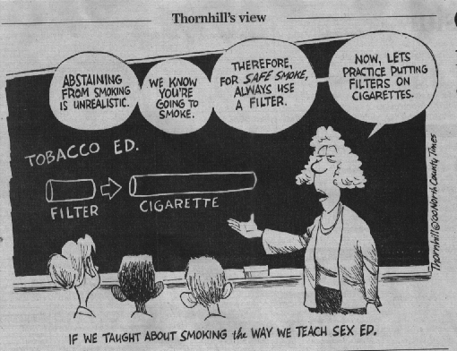
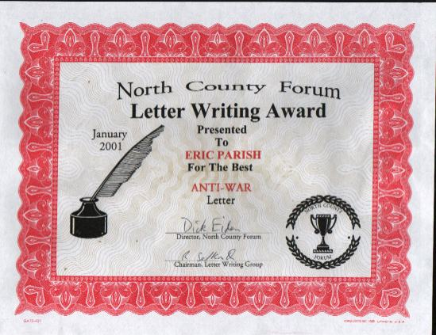
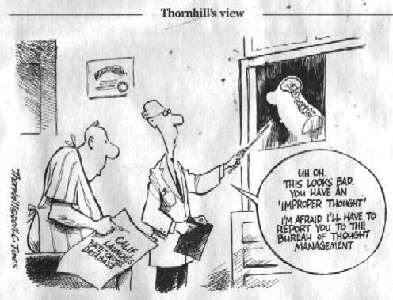

Published
letters: 2000
Published
letters: 2000
1986 1987
1988 1989 1990
1991 1992
1993 1994 1995
1996 1997 1998
1999 2000
HOME

Oceanside North County Times January 8, 2000
Religious shouldn't impose morality on all
I see that Mark Thornhill is still very confused (Jan 5). Comparing
cigarette filters to condoms is rather bizarre. I think most of us agree
that no one wants to see anyone start smoking cigarettes. They will kill
you. On the other hand, I think most of us parents want our children to
have sex someday, and lots of it. I want many grandchildren myself.
The problem seems to be that some parents think their children
should be married first before having sex. This seems to be some kind of
a religious belief as far as I can tell. Sexually transmitted diseases
are rather scary but have been around for ages. Condoms have been proved
to stop them if used appropriately. If religiously-inclined people wish
their children to go to the marriage bed intact, that is OK by me. However,
trying to impose their pseudo-morality on everyone else using the public
school system is not OK.
I think all these "no-sex-before-marriage" people should answer
a couple of questions the next time they try to impose their morals on
the rest of us.
This goes for Mr. Thornhill, too. Were they all virgins on their wedding
nights? And if so, why do they think they should make everyone else be?
ERIC PARISH
Vista
*THIS IS A RESPONSE TO MY LETTER*
Oceanside North County Times January 21, 2000
Abstinence is a matter of common sense
Concerning Eric Parish's Jan. 8 letter, "Religious shouldn't
impose morality on all," he would do well to pick up a copy of "Sex, What
You Don't Know Could Kill You" by Joe S. McIlhaney Jr. Mr. Parish believes
that artist Mark Thornhill erred when comparing filters on cigarettes to
condom use. The comparison, while not perfect, was brilliant. Mr. Parish
tells us that condom use has been proven to stop sexually transmitted diseases
if used appropriately.
What he doesn't realize is that condoms do little to stop the
spread of diseases like herpes and the human papilloma virus, which causes
veneral warts, and approximately 33 percent to 45 percent of sexually active
singles are infected with it. Concerning HIV, due to the normal result
of the manufacturing process of latex there are pores present in all latex
condoms.
These pores, while small, are much larger than the HIV organism.
That is like tossing a Ping-Pong ball through a Hula Hoop.
One notable study showed that HIV-sized particles leaked through
the pores oin 29 out of 89 condoms. Condoms may make sex less hazardous,
but they don't make sex safe. Abstinence education in public schools is
not imposing religious morals on our children. It is just common sense.
CHERYL DEA LOWRY
Escondido
Oceanside North County Times January 27, 2000
Sex education should not be based on fear
Ms. Cheryl Dea Lowry responds to my previous letter on abstinence-only
sex education by saying it is not religious morality but only "common sense".
Her claim that condoms have "pores" that let in HIV is simply not true.
They block both HIV and the even smaller hepatitis B virus.
She recommends I read a book, "Sex, What You Don't Know Could
Kill You" by Dr. Joe S. McIlhaney, Jr. She neglects to mention that Dr.
McIlhaney runs the Medical Center for Sexual Health in Austin, Texas.
They publish a fear-based, abstinence-only program for junior
and senior high school students called Safe Sex. They do no original research.
Their publications are largely based on anecdotal data by Dr. McIlhaney
designed to shame and scare students into believing that abstinence until
marriage is the only moral and acceptable choice for adolescents. The program
consists of showing slides of people in the advanced stages of syphilus
and AIDS and pronouncements that "this could happen to you!"
I see no common sense in these kind of views, only the fear of
religious fundamentalists that their children might someday discover that
sex is not filthy and sinful.
ERIC PARISH
Vista
Oceanside North County Times April 3, 2000
Americans are illiterate of scientific fact
I was about to write a scathing rebuttal to Elaine Kotter's
March 24 letter, "Americans favor teaching creation as science." . So I
went to the Gallup Poll Web site to read firsthand the poll and it's results.
According to the poll conducted June 25 through 27 last year, Americans
favor teaching creationism in the public schools, along with evolution,
by a margin of 68 percent to 29 percent. However, by a margin of 55 percent
to 40 percent, they would oppose replacing evolution with creationism.
Then I found a truly terrifying figure. A whopping 47 percent
of Americans believe that God created human beings at one time within the
last 10,000 years pretty much in our present form. This abundance of ignorance
actually frightens me. I stand humbled before this yawning chasm of scientific
illiteracy.
The only silver linings to these numbers seem to be that the
younger and more educated you are, the less likely you are to believe in
these kind of superstitions, and the fact that we do not vote on what is
or is not scientific knowledge. On a similar note, 45 percent of Americans
think that UFO's have actually visited earth, and 12 percent say that they
have actually seen a UFO.
ERIC PARISH
Vista
Oceanside North County Times April 23, 2000 (Easter Sunday)
He apologizes for deaths in Vietnam
It has been 25 years since the ignominious end to our pointless,
divisive, and tragic war against the Vietnamese people.
I would like to apologize to the people of Vietnam for the deaths
of more than three million of their people.
I wish to apologize to the families of the more than fifty thousand
American soldiers who died for nothing. I am sorry I was too young to not
do more to stop that war before it became a monster.
I am sorry that I didn't do more to stop it when I came of age.
It is insane that John McCain and his buddies dropped more bomb tonnage
on Vietnam than was dropped in all of WWII.
It is truly insane that America still thinks that war is an answer
to the problems of our world.
ERIC PARISH
Vista

I got this at the North County Forum Awards Dinner on January 27,
2001 for the preceeding letter.
*A response to my last letter*
Oceanside North County Times April 27, 2000
Vet doesn't need people to apologize for him
Who exactly is Eric Parish, and what gives him the right to apologize
to the Vietnamese people and to the families of the American dead from
Vietnam (Letters, April 23)? Is he a Vietnam veteran, or is he like so
many Americans today who are so ready to apologize to the world for every
slight or imagined slight that he believes has happened since the United
States became a country?
I am a Vietnam veteran, and I do not take kindly to someone apologizing
for me when I was doing my duty as was expected of me by my country.
I say to Eric Parish and people like him: If you want to apologize
to the Vietnamese people, please, go to Vietnam, and stay there.
ROBERT M. ATKESON
Oceanside
*A response to that last letter :)*
Oceanside North County Times May 6, 2000
Vietnam apology showed compassion
In regard to Mr. Robert N. Atkeson's April 27 letter: There
is something in the U.S. Constitution called the First Amendment. Mr. Eric
Parish can say anything he likes, as can you, as can I; they are our own
opinions. I am a Vietnamese-American born in the United States. My father
fought in the war, and my uncle died fighting against the communists for
his country, South Vietnam. Yet there are no memorials or even mention
of the South Vietnamese people, civilian and military, who died fighting
the communist regime. This 25th anniversary of the ending of the war is
a time I do not like to remember. I applaud Mr. Parish for having some
compassion. More people should stop and think of the real atrocities of
this war.
AN H. LE
Vista
Oceanside North County Times May 9, 2000
Scouts have rights to their own rules
Richard Kirk
Commentary
Freedom of speech and religion in America are in peril. You wouldn't
know it from the comments
of cowardly, morally vacuous journalists, but that's what's at
stake in a case that was argued
before the Supreme Court two weeks ago.
The question at issue is, do the Boy Scouts have a right to decide
the meaning of the phrase
"morally straight," or is this judgment the prerogative of state
and federal courts? More specifically,
is it still OK for the Scouts to follow ideals that are rooted
in a religious tradition that goes back
2,500 years ---- ideals consistent with the orthodox beliefs
of virtually every major world religion?
Forty years ago this case would have been unthinkable. Today,
nothing is unthinkable in a culture
permeated by a political correctness rooted in sexual indulgence.
This moral nihilism pervades the
sensibilities of legal elites who relish the chance to add to
their vast powers the role of moral
demigod.
The audacity of justices even considering such a case should raise
howls of protest from citizens
across the nation. Only in a nation filled with sedated consciences
and led by elites who have
perpetrated this moral treachery could such a legal issue be
raised.
The New Jersey Supreme Court already has ruled that the Boy Scouts
may not exclude a
homosexual activist from being a scoutmaster. Unless the U.S.
Supreme Court reverses this ruling,
judges will henceforth decide what constitutes morally acceptable
behavior for private
organizations that have gotten too big for their politically
incorrect britches. (Meanwhile, these
same moral Mandarins don't have a clue about whether a 9-month-old
fetus is really human.)
To put the matter in legalese ---- that polysyllabic jargon that
gussies up acts of raw judicial power
in intellectual drag ---- the Garden State's most powerful court
has declared the Boy Scouts a
"public accommodation." The organization is thus placed in the
same category as a restaurant or
hotel. As such, it is not entitled to act upon a moral and religious
belief shared by billions of people
around the world.
Leftists are always protesting the slightest intrusion of religion
into the affairs of state. Politically
correct fascists like ABC's George Stephanopoulos inevitably
argue that the wall of separation
between church and state must be kept high and impregnable. Obviously,
however, this wall is one
of a kind. It keeps religious beliefs out of the ever-expanding
world of the state, but it doesn't keep
PC Nazis out of the affairs of a creedally based organization.
It's a one-way wall.
In truth, most leftists are totalitarians at heart. They would
be happy to use the state's power to tell
everyone what to believe and how to act ---- controlling everything
from smoking in bars to
driving under the influence of cell phones. Nothing could demonstrate
that craving for power more
clearly than the ruling of New Jersey's robed eminences that
a private organization is not free to
follow traditional moral beliefs at odds with the canons of political
correctness.
If that fact doesn't upset fat and happy Americans, then they
no longer deserve the blessing of
liberty.
North County Times columnist Richard Kirk of Poway teaches at
a private school in San Diego.
E-mail: kirkrg@nctimes.net.
5/9/00
Oceanside North County Times May 14, 2000
Kirk losing cultural war
One can tell that poor Richard Kirk is losing his cultural
war against the "PC Nazis" ("Scouts have right to their own rules, May
9). His tone has moved from the mild lecture on what dummies we all must
be to the strident anger in his latest declaration that we "no longer deserve
the blessings of liberty".
The problem, of course, is that his ideas are wrong. The Boy
Scouts have been ruled a "public accommodation" by many different lower
courts. The BSA has a broad-based membership solicitation process where
any boy of any religion or moral beliefs may become a Scout. This is no
private club. Would the courts allow the Scouts to reject black or Jewish
boys or adult leaders? The BSA has also historically partnered with public
entities and public service organizations. A troop meets here at Washington
Middle School every week.
I get the feeling that what Mr. Kirk doesn't like is that discrimination
based on sexual preference is illegal. Tough. If you don't like it, try
to get Congress to pass a law making discrimination legal again.
ERIC PARISH
Vista
North County Times May 21, 2000

Oceanside North County Times May 29, 2000 Memorial Day
Hate-filled thoughts are not hate crimes
Let me try to explain hate crimes to Mr. Mark Thornhill again
(Thornhill's View, May 21).
Hate crimes are acts of violence. Thinking or speaking hate-filled
thoughts are called First
Amendment rights in this country. Burning a cross on one's own
property is even free speech. The
actual assault on people because of their race, gender or religion
defines a hate crime. We, the
people, have decided that a person who attacks others because
of hateful prejudice is more
dangerous and deserves more punishment. Rather like if you attack
a police officer, your
punishment is much greater because you are seen as a much greater
threat to the public at large.
Showing a doctor taking an X-ray of a person's brain and then
reporting him to the "thought
police" is a rather silly way of viewing a serious subject. But
then, you weren't really trying to be
serious, were you, Mr. Thornhill?
ERIC PARISH
Vista
Oceanside North County Times May 31, 2000
1st Amendment is still alive, but not well
Mr. Eric Parish and Mr. Andrew Gigliotti (Letters, May 29) seem
to think that the First Amendment
is still alive and well. While it is still alive, it is not well.
If you think back, not too long ago a well-known Fallbrook man
lost all he owned for speaking hate
thoughts. Because he was a repulsive bigot, few people complained.
If you say the wrong things at work, you can be fired. This can
include reading some Bible verses
aloud. Protect all of your rights. Someday you will wish you
had them back.
JACK FULLERTON
Fallbrook
Oceanside North County Times June 6, 2000
Double standard rampant
Richard Kirk
North County Times
It isn't unusual for readers to criticize the views expressed
in this column. For the most part,
however, I suspect my ideas reflect those of the majority of
North County residents. I doubt I am
out of step with them, but I am clearly out of step with the
group I have designated cultural elites.
For the past four years, one of my recurring themes has been the
influence exercised by this elite
on the moral outlook of Americans ---- even on Americans in conservative
North County. It has
been my goal to get readers to reflect on the meaning, as well
as the sources, of their moral
convictions.
While criticism has been frequent, counter-arguments have been
exceedingly rare. People have a
hard time articulating why they believe what they believe. When
I pointed out, for example, that
studies done on identical twins (Bailey and Pillard, King and
McDonald) do not confirm the
popular genetic theory for homosexual behavior, one letter-writer
dismissed this evidence by
saying he'd never heard of these studies. Not surprisingly, he
didn't provide an alternate study of
his own.
Most of all, he didn't ask the most important questions: Why haven't
I heard these things? Is
someone not leveling with me? Is there a media slant that filters
out stories that don't fit the
accepted template?
Matthew Shepard's murder was a major story for weeks, but the
brutal killing of 13-year-old
Jesse Dirkhising, who was bound, gagged and sodomized by two
gay men, was given zero
coverage by ABC, CBS, NBC, CNN, Time, Newsweek, U.S. News, the
L.A. Times, the New
York Times, and USA Today. In defense of this double standard,
Time.com writer Jonathan
Gregg argued that the Dirkhising murder "offered no lessons."
Presumably there also are no
lessons to be learned from the North American Man-Boy Love Association's
participation in gay
pride parades.
The unspun truth is this: If a story doesn't fit the politically
driven news template, it isn't normally
considered news.
People tend to reflect the ideas of those around them. Today,
however, Americans are confronted
with a huge cultural divide. On the one hand, there are the traditional
views that folk hold as a
result of parental and religious training. On the other hand,
there are "progressive?" ideas that have
emerged largely from the electronic culture.
The morality emanating from the latter source is rooted in an
overwhelmingly secular community
noted for celebrity and self-indulgence. This culture is associated
with a host of degrading images,
many produced for children, and is led by a cadre of elites who
regularly pass the moral buck by
appealing to market forces when money and fame are at stake.
The opposing culture is comprised
of some of the most morally serious persons in the nation ----
evangelicals, Roman Catholics and
devout Jews.
Most people, I think, would carefully scrutinize moral messages
coming from a community that
profits from decadence and often denounces in shrill tones people
who appear to constitute the
moral backbone of the nation. It's hard to scrutinize a message,
however, when it's the only one
you consistently hear.
North County Times columnist Richard Kirk of Poway teaches at
a private religious
school. E-mail: kirkrg@nctimes.net.
6/6/00
Oceanside North County Times June 11, 2000
Free-thinking individuals can live moral lives
As a Richard Kirk-designated "cultural elite," I feel sorry for
the majority of North County
residents who allow such a homosexual-hating columnist to speak
for them through our morning
newspaper ("Double standard rampant," June 6). To continue to
portray gay men as pedophiles
and child murderers is disgusting for someone who considers himself
fit enough to teach philosophy
to teen-agers. Throughout history, free-thinking individuals
have lived life happily and, yes, morally
without resorting to Mr. Kirk's Judeo-Christian trinity of sin,
smugness and superiority. Bashing
gays does not explain away the cultural problems Mr. Kirk seems
to see. Moving certain people
down the ladder of humanity does not necessarily move Mr. Kirk
up.
ERIC PARISH
Vista
Oceanside North County Times June 28, 2000
Christians should do it in their closet
At least Joe Slobig has the guts to give the real reason why
proselytizing evangelicals want
organized Christian prayer in the public schools ("Prayer belongs
in the schools," June 23).
"For those kids whose parents are bringing them up in a godly
household, this time will be
welcomed. For kids whose parents are indifferent to God, the
child's sudden interest in God could
become a catalyst to bring God's presence into the household."
I think he means parents who are "indifferent" to his kind of
Christian God, like Jews, Hindus,
Muslims, Buddhists, Sikhs, etc. The Supreme Court has ruled on
this many times. State-financed
public schools are not the place for injecting Christian superstition
and moral dogma into
impressionable children. Parents may do that in their own church
if they wish.
I recall what the Bible itself says about prayer, Matthew 6:5-6.
People who pray in public are
hypocrites. Pray in your closet with the door closed.
ERIC PARISH
Vista
Oceanside North County Times July 3, 2000
There is a place for public prayer
This letter is in response to Eric Parish's June 26 letter. In
Matthew 6:5-6, Jesus did not say
"people who pray in public are hypocrites." He said: "And when
you pray, do not be like the
hypocrites."
Jesus was referring to some people, especially the religious
leaders, who wanted to be seen as
holy and were using public prayer to get attention. There is
a place for public prayer, but to pray
only where others will notice you indicates that your real audience
is not God.
Jesus encourages persistent prayer. But he condemns the shallow
repetition of words that are not
offered with a sincere heart. We can never pray too much (even
in public) if our prayers are honest
and sincere.
A book written in 1988 by David Barton, titled "America, To Pray
or Not to Pray?" reveals clear
and shocking negative statistical evidence that the removal of
the 22-word prayer "Almighty God,
we acknowledge our dependence upon thee, and we beg thy blessings
upon us, our parents, our
teachers and our country" has had on our nation since millions
of students and teachers were
ordered to stop praying in public schools.
CHRISTINE WATSON
Vista
Oceanside North County Times July 6, 2000
Anti-Christian letters are bigoted
I see our local anti-Christian group, Eric Parish, John Ljubenkov
and Raymond Briggs (Letters, June
28), continue their tirades. Mr. Parish's words "injecting Christian
superstition and moral dogma into
our impressionable children" would be labeled as "bigoted hate
speech" if they were aimed at any of
our other well-publicized minority groups. One assumes that injecting
our impressionable children
with dogma that approves of premarital sex, free condoms, abortion
without parental knowledge, a
homosexual lifestyle and a myriad of other left-wing agendas
is not as dangerous as learning about
God.
Ljubenkov and Briggs continue their attempts to disprove the
Bible by picking on incidental details
that have little or no importance to the overall biblical message.
Does Ljubencov realize that 9.90
divided by 3.15 equals 3.142? Would he be happier if the writer
had worked to two decimal places
instead of the logical whole numbers? Perhaps he should explain
why even an inaccurate pi in a story
throws biblical numerology out of whack.
Briggs, as usual, continues to miss the point of the Bible. His
agenda has nothing to do with details in
the Bible but would be classified as bigoted if addressed to
any other group.
BOB JILLINGS
Oceanside
Oceanside North County Times July 24, 2000
Marines fight environmental zealots for space
Our safety
and military protection are threatened by environmental zealots who designate
setting
aside
51,000 Camp Pendleton acres and 12,000 Miramar acres for the gnatcatcher
and 13,000 Camp
Pendleton,
9,300 Miramar acres for the San Diego fairy shrimp. Nearly one-half of
those bases
would
protect a few endangered species while we would suffer the effects of inadequate
military
space.
Thousands of additional acres would be set aside for other species.
In a May
8 letter to the director of the Fish and Wildlife Services, the commander
of Camp
Pendleton,
Maj. Gen. Edward Hanlon Jr. wrote, "The designation of critical habitat
on USMC lands
is unacceptable.
Such land set aside fails to consider the adverse impact on the military
readiness of
combat
units based at Camp Pendleton and Miramar."
Camp Pendleton
spends $20 million to $40 million annually to deal with environmental management
programs
for these insignificant species. Many millions are spent elsewhere. It
is ironic that we think
nothing
of aborting a million-plus human fetuses annually, God's highest created
beings, while trying
to preserve
some lesser species.
We cannot
save all life but we must choose to preserve the quality and environment
of the highest
life
human beings.
DAVE BECHOK
Carlsbad
Oceanside North County Times August 15, 2000
E-mail explains endangered species' position
I assumed
that some would be upset with the new rules regarding environmental protections
at
Camp Pendleton
and Miramar for the endangered species living there. After all, the world
was
created
for us to subjugate and pillage. Mr. Dave Beck mentioned on July 24: "We
cannot save all
life,
but we must choose to preserve the quality and environment of the highest
life human
beings."
However,
I received a very odd e-mail the other day on my psychic computer. It said
in part:
"Please
do not set aside our lands at the military bases for our protection.
"After
much discussion, we have agreed among ourselves that the more soldiers
and weapons you
prepare,
and the stronger you make your armies, the more humans you will be able
to slaughter,
and the
sooner Gaia our Mother Earth will be able to return
to its usually peaceful self.
"Our kind
will gladly sacrifice ourselves so that you humans may better prepare your
armies to
destroy
yourselves." This was signed "The Gnatcatcher's League and Fairy Shrimp
Conglomerate."
ERIC
PARISH
Vista
Oceanside North County Times August 3, 2000
Homeless shelter would hurt Vista
Once again
the citizens of Vista should unite against another project that will demean
our city. Our
temporary
winter shelter has been so successful that we now have a 500 percent increase
in the
homeless
from the 15 to 25 (documented by the responsible deputy sheriff in December
1999) to
l00-plus
in the future. While debate now centers on an interim shelter, there are
plans for a
year-round
shelter in addition to those now operating in the city at four locations.
Over 200
homeless
are already housed in Vista.
This latest
proposal would house 50 people in less than 3,600 square feet of commercial
space on
our signature
street. All this while our new developer and loyal existing businesses
are working in
good faith
to survive and create an attractive and vital new downtown for us.
The neighborhood
needs your help to defeat this unnecessary proposal. Support them by calling
our council
at (760) 639-6130, faxing at (760) 639-6132 or e-mail at gmcclellan@ci.vista.ca.us
by Aug.
7.
JEAN
JANTZ
Vista
Oceanside North County Times August 28, 2000
Homelessness is a temporary situation for most
I find
it remarkable that some people still view the homeless as a separate species
of slothful,
depraved
humanity ("Homeless shelter would hurt Vista," Aug. 3, Jean Jantz).
Homelessness
is a temporary fact for most of these people sudden joblessness,
divorce or
sickness
and suddenly you find yourself without a roof. Oddly enough, the visible
homeless the
kind pushing
carts who the police count - are the least likely to use shelters.
The people
who use our Vista shelter are more likely these days to be women with children,
having
trouble finding a place in our North County rental market.
Unlike
Ms. Jantz, I am extremely proud of the fact that more than 200 homeless
are already
housed
in Vista. In a normal way of thinking, this would mean they are not homeless
anymore. But
I am sure
Ms. Jantz and our famous "let them go to Oceanside or Escondido" City Councilman,
Dick Cooke,
will continue to find a way to vilify these people.
ERIC
PARISH
Vista
Oceanside North County Times August 8, 2000
The sneaky origins of racism
Richard
Kirk
Commentary
What are
the sources of racism in America ---- and in Carmel
Valley?
In a media-saturated society whose every third word is
"diversity,"
what is the cultural genesis of that animus directed toward
those
whose skin tones are different and whose ethnicities seem foreign? If even
the moral zeroes
in the
rock industry condemn bigotry in their obscenity-studded sketches of American
life, where
are the
true hate mongers?
One can
point to the KKK, but that organization is so small and discredited few
people take it
seriously.
Only media moguls who would do anything for a Nielsen point pretend that
this fringe
group
is more important than that cohort of American women who have been impregnated
by
space
aliens.
Some racism
doubtless informs recent discussions of immigration policy ---- just as
it did the
debate
on NAFTA. But unlike the rhetoric that once fueled the popularity of George
Wallace, this
tacit
racism is hard to put a finger on. How much is genuine policy disagreement
and how much is
attributable
to racism? Nothing is easier than impugning the motives of political opponents
and
assuming
they are bigots in business suits.
Nobody
can lay claim to respectability in today's society while publicly espousing
racist ideas.
David
Duke, no matter how many makeovers he may attempt, will forever be a political
pariah.
The same
goes for Louis Farrakhan --- though indulgences are sometimes given to
leaders such as
Al Sharpton
that would never be extended to white boys. (Thus phrase was employed publicly
by
a prominent
Al Gore staffer, Donna Brazile.)
So where
do racist sentiments come from in a society that constantly expresses its
disapproval of
racism?
I believe a significant amount of hostility stems from the practice of
relating to people, first
and foremost,
in terms of their ethnicity or race. This Balkanizing hyphenization of
Americans has
contributed
to bigotry both on the part of those who employ the hyphen as a political
weapon as
well as
those who wouldn't know how to fill in the ethnic blank if asked.
The hyphenated
world of political correctness brings with it a culture where the rules
that apply to
one group
don't always apply to the other. I well remember the bizarre notion, promulgated
passionately
in the nation's universities, that only one race in a society can be racist
---- an absurd
gimmick
that transforms the so-called powerful folk into perpetual targets and
gives everyone else
carte
blanche to trash them.
A corollary
to this principle establishes variable standards in other areas, depending
on the name in
front
of the hyphen. Ebonics, for example, was OK for one group, as were SAT
scores of less
than 1,000
when it came to admission to Berkeley. For Asian-Americans, on the other
hand,
grammatical
correctness and scores of 1,300 or higher were expected.
Anyone
who thinks finger-pointing rhetoric and group-based standards are not breeding
grounds
for racism
is living in an ideological fantasyland. People without exceptional skills
who feel cheated
because
of double standards are especially inclined to wear the accusatory insults
directed toward
them as
badges of honor.
Better
we should judge all people by the content of their character.
North County
Times columnist Richard Kirk of Poway teaches at a private school in San
Diego.
E-Mail:
kirkrg@nctimes.net.
8/8/00
Oceanside North County Times September 14,
2000
Racism still alive and well
I see that Richard Kirk thinks he has discovered the cause of
racism in America today (The Sneaky Origins of Racism, August 8). Like
the rest of the conservative right, he pounces on affirmative action as
the major breeding ground for racism, completely ignoring the hundreds
of years of white European disdain for people of color. Getting rid of
affirmative action assumes we have finally become a color-blind society
- that people with black and brown skin have the same opportunities as
the majority to find decent jobs, housing, schools, medical care, etc.
Sadly, this is far from true in the America of today. Mr. Kirk
says he can't seem to find any overt racism in our society. Perhaps he
does not hear the epithets of some of our high school students who mouth
the racism of their fathers as they beat old Mexican-born men. Maybe he
has not seen the explosive growth in hate sites on the Internet.
Personally, I get the feeling that Mr. Kirk doesn't have much
contact at all with the real world. Judging people only "by the content
of their character" is a great idea, once we can get the ignorant and hate-filled
among us to see past the color of that character. Until then, we can do
without Kirk's pleadings that we have conquered racism and bigotry.
ERIC PARISH
Vista
Los Angeles Times September 18, 2000
* I have a message for all the politicians whining about violence
in the media. This is for John McCain, Lynne Cheney, Joe
Lieberman, Al Gore, George W. Bush and all the others who put
their carts and horses together backward on the subjects of media
and violence.
Have any of you heard of the 1st Amendment? The government
does not get to decide what kinds of movies, music or reading
material we are allowed to read, watch or listen to. Period. Even in
an election year.
ERIC PARISH
Vista
North County Times September 19, 2000
Whites don't have monopoly on racial hatred
Although
I agree with Mr. Eric Parish (Letters, Sept. 14) that racism is still alive
and well, I was
offended
at his comment about the conservative right. Mr. Parish should remember
that white
Southern
politics were dominated by Democrats until fairly recently.
I'm a
conservative who doesn't blame affirmative action for racism. I believe
it is a symptom of
well-intentioned
but naive politicians.
Please
remember that whites don't have a monopoly on racial hatred; just look
at Al Sharpton and
Spike
Lee.
MARK A.
LePARD
Oceanside
North County Times September 27, 2000
Voucher idea a windfall for affluent parents
It seems
to be time to talk of vouchers again. Like vampires on Halloween, this
idea seems to rise
up from
the dead every election year.
The facts
are these: Six million pupils attend K-12 public schools in California;
650,000 pupils
attend
K-12 private schools, including religious schools; Proposition 38 would
give vouchers of
$4,000
to private school pupils; $4,000 times 650,000 equals an immediate payout
of $2.6 billion
for the
mostly-affluent parents of children in private schools today.
There
are currently 32,000 vacancies in all the private schools in all of California.
It is
fairly obvious what this proposition is a $4,000 windfall for
parents who already have their
children
in private schools.
This is
sadly ironic in a state that lacks funds for Head Start and health insurance
for its millions of
poor children.
But not surprising considering the Silicon Valley multimillionaire who
paid for the
initiative,
paid for the signatures it needed and who has vowed to spend what it takes
to see it
pass.
That's dollar-democracy in action here in California.
ERIC
PARISH
Vista
North County Times October 16, 2000
Israel must stop the killing
His name
was Rami Durra. He was 12 years old. Many of your readers have written
to complain
because
you printed the photo of his last seconds alive last week on the front
page of your paper.
They do
not want to see pictures of a young boy being shot to death by Israeli
troops. Not in their
paper
on a Sunday morning. It was too horrific. I imagine Rami's father found
it rather horrific also.
It is a
shame the North County Times didn't print photos of the other 80 Palestinians
killed during
the last
week. Maybe then we would all say "Enough!"
The U.S.
government spends $3 billion a year to pay for Israel's bullets and other
military toys. It
seems
we have no say at all in keeping those bullets and anti-tank missiles from
being fired at
stone-throwing
Palestinian rioters. It is time for that to change.
Israel
must withdraw its occupying armies from the land it seized during the 1967
war. That
includes
East Jerusalem. The killing must end.
ERIC
PARISH
Vista
North County Times November 19, 2000
Sweet justice to name freeway after Packard
Highway
78 is to be named the "Ronald Packard Parkway," according to a Nov. 15
story. Why
not call
it the "Pork for Republicans Parkway"?
Being
elected in 1982 to one of the safest Republican districts in the country
sure hasn't hurt Mr.
Packard
in his desire to rake in as much federal cash as fast as he can possibly
find ways to spend
it. For
some reason, Republican congressman are really good at this.
Spending
gobs of federal loot in his own district is a far cry from actually trying
to do something
good for
the real environmental and human problems we have in our country. Heaven
forbid we
have universal
medical insurance or Head Start for all kindergartners. More highways
for all those SUVs in my district, if you please.
Mr. Packard,
in actuality, was one of those Republican congressmen who claimed to be
for easing
the tax
burden for everyone, as long as the feds continued to plow money into his
pet
transportation
projects. Doesn't he know where that federal money comes from?
There
will be no Ron Packard National Forests, no Ron Packard Beach Wilderness
Preserves.
There
will definitely be no Ron Packard AIDS clinics. In fact, the very names
are laughable. I
guess
it is sweet justice that Rep. Packard's 18 years as a United States Congressman
boils down
to his
name on a measly stretch of smog-bound Southern California freeway.
ERIC PARISH
Vista
North County Times December 15, 2000
County GOP learns a lesson
Mason Weaver
Commentary
Tuesday
night the U.S. Supreme Court decided enough was enough
and stopped
the Florida Supreme Court from acting like the legal
wing of
the Democratic Party. By a 7-2 margin the U.S. Supreme
Court
decided it was unconstitutional to count ballots in some precincts differently
from those in
others.
When the
decision was announced I was attending a political Christmas party in downtown
San
Diego.
All evening the buzz was about the election and predictions of what would
happen. This
was a
Republican group, but divided in ideology. The room was full of political
opponents and
power
brokers.
There were
Oceanside consultants, columnists, pollsters, talk show hosts and national
and local
leaders.
The Republican Party of San Diego has two major factions. One is moderate
and very
pro-business
and the other is more conservative on social issues. They have always struggled
for
control
of the party. They bring great benefits to the elected officials, that
is why no one group has
dominated
the struggle.
There has
always been a struggle between the North County and San Diego City republicans.
This
division
has been kept under the radar in recent years. It came to a head during
the Vista school
board
teen pregnancy abstinence program. Many moderate Republicans were embarrassed
by the
controversy
over sex education. Conservatives were upset by the party's lack of help
to Vista
school
board members.
The political
struggle within the San Diego Republican Party exploded since then. From
the recall
election
in the Vista Unified School District to the fight over control of the San
Diego Republican
Central
Committee, the fight has grown more intense through the years.
The camps
have been the moderates (wealthy donors to the party) against the conservatives
(activists
who walk precincts and staff phone banks). The leadership has been trying
to keep
peace
between them. The party needs both sides: money for campaigns and volunteers
to stuff
envelopes
and make phone calls.
From this
disunity we have seen the California Republican Party lose power in the
Legislature,
governor's
office and in local races. The state Republican Party of California has
been in shambles
for many
years, but I detect a change.
Tuesday
night as I mingled with the Christmas crowd I saw clear evidence that the
party is
beginning
to recognize the struggle facing it. The factions were not sniping at each
other; many
were polite
and supportive. As I spoke to developers, donors, activists and others
I got the feeling
that the
drama being played out in Florida was bringing the party together.
For weeks
demonstrators have been showing up in San Diego from all over the county,
banding
together
like Republicans never have. I have never seen some of these people at
political rallies but
some had
traveled to Florida and planned to go to Washington, D.C. The party has
found an
opponent
outside itself.
There was
a great cheer when the U.S. Supreme Court decision was announced. There
was a
genuine
commitment between the factions to answer the challenges ahead. Most agreed
that a
Bush victory
would not end the controversy, nor their need to come together.
After losing
every constitutional office in the state but one, the 1996 California elections
found the
Republican
Party divided and defenseless. Now the party has been energized and found
new
hope.
It appears George W. Bush was right; he seems to be a unifier rather than
a divider.
North County
Times columnist Mason Weaver lives in Oceanside.
12/15/00
North County Times December 21, 2000
Republicans shouldn't gloat over president
It was
refreshing of your columnist Mason Weaver to inform us of his attendance
at a Republican
Christmas
party in San Diego (Dec. 15). Rubbing elbows with the housing developers
and the
movers
and shakers of our Republican elite must have really brought out that Christmas
spirit. I am
sure none
of the guests were too worried about paying their holiday utility bills.
Mr. Weaver
is very correct about the divisions within his party. There are the "protect
the wealthy
with less
taxes, no minimum wage"-type Republicans, and then there are the "let's
make the
Christian
Bible the law of the land" types. Republican public officials are mostly
the first type,
changing
to the second type around election time.
Mr. Weaver
and his fellow partygoers gave a big cheer when they heard that the Supreme
Court
had handed
the presidency to Bush. I wouldn't gloat too much about a president who
couldn't win
the popular
vote.
Maybe
for his next column, Mr. Weaver will enlighten us with his ideas as to
why the black vote
for president
went 9-1 Democratic.
ERIC PARISH
Vista